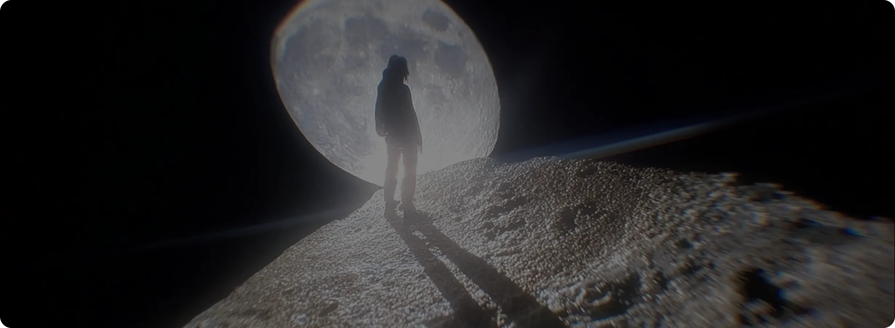
Technical report 2026
I'm a founding member at Sand AI, leading the team behind MAGI and GAGA. We focus on scaling frontier video foundation models across modeling, data, and infra. Previously, I was at Xiaohongshu, Alibaba DAMO Academy, and Microsoft Research Asia (MSRA). I hold an M.S. from Peking University and a B.S. from Beijing Jiaotong University.
I've been fortunate to work with Li Shen, Jianmin Bao, Hao Yang, Dong Chen, Fang Wen, and Baining Guo.
My research interests include generative models. Some of my papers are among the PaperDigest Most Influential Papers. I serve as a reviewer for many top conferences (including ICLR, NeurIPS, ICML, CVPR, ICCV, ECCV and AAAI) and top journals (TVCJ, IJCV, TIP, TMM).
I’m hiring researchers and engineers to push the frontier of video foundation models. Get in touch

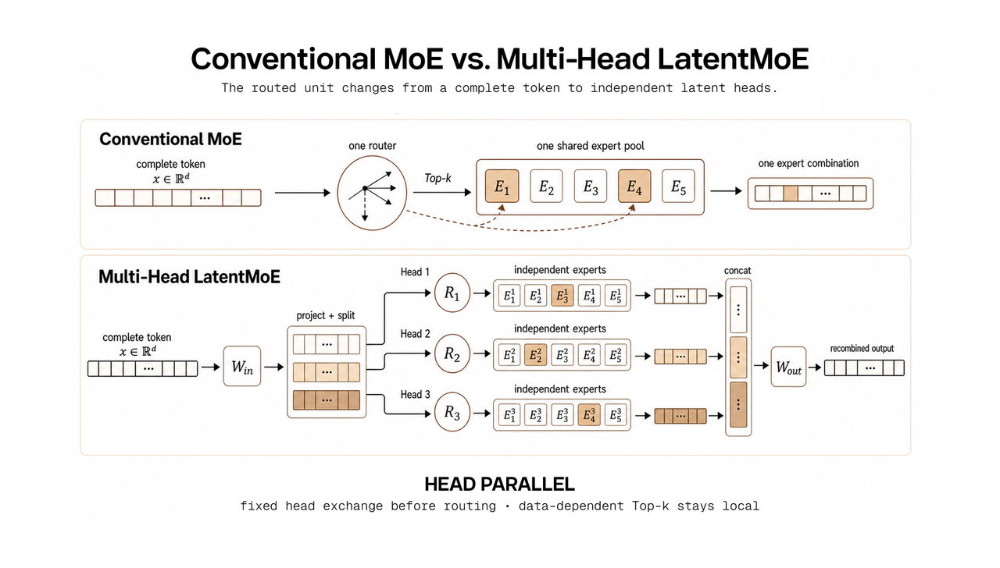
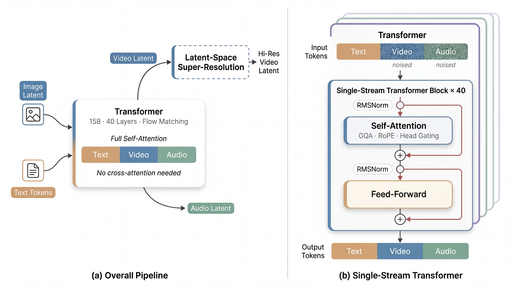
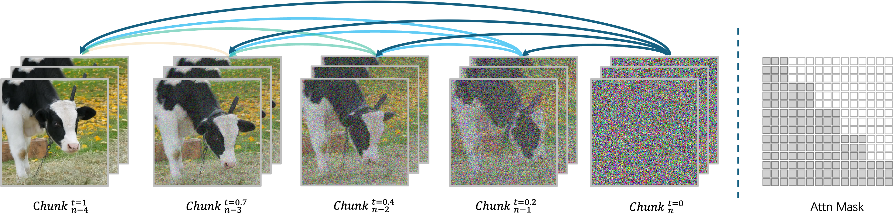
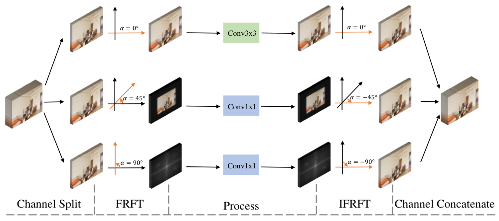
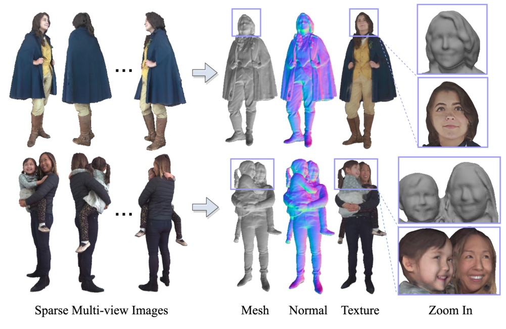
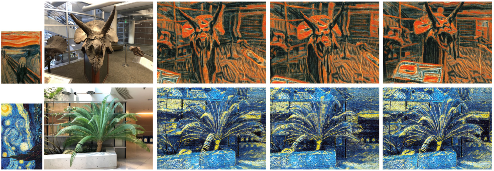
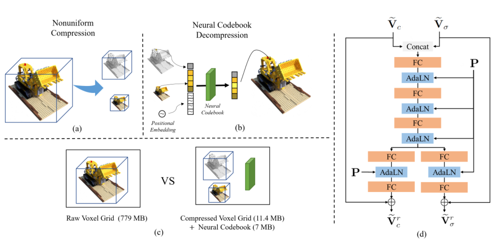
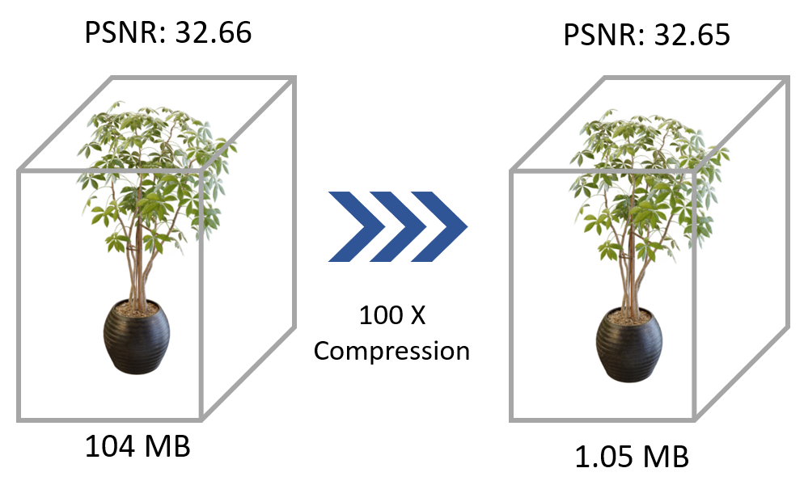
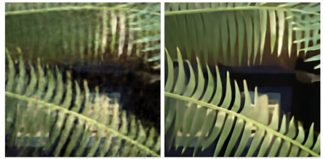
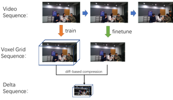
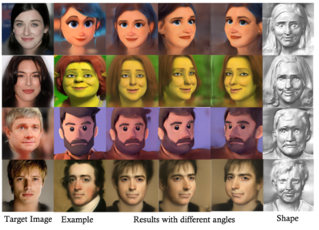
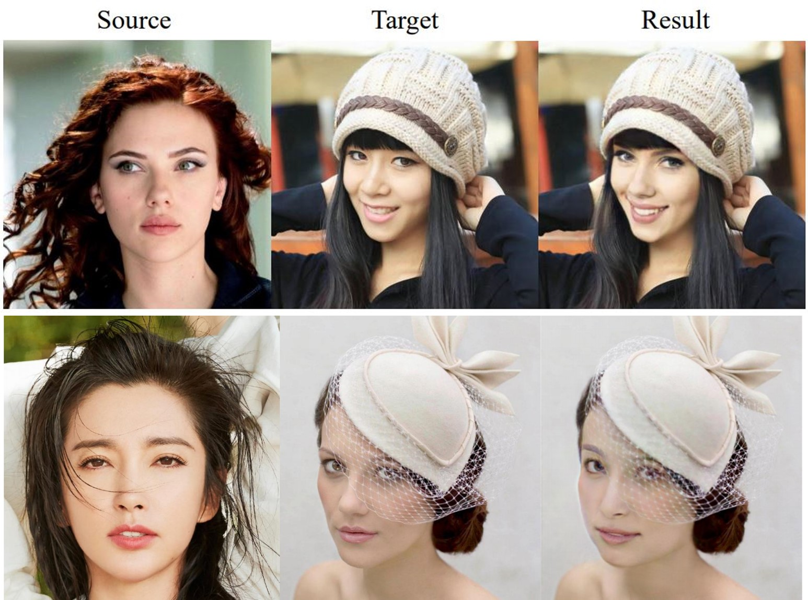
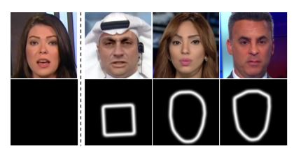
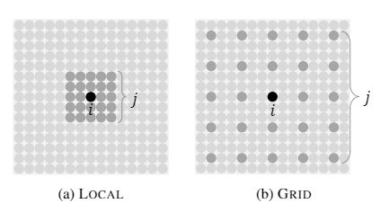
* Equal contribution.
Forgery detection of face image
US20230021661A1